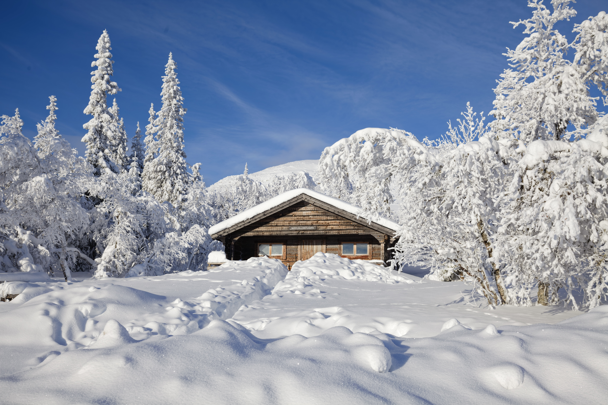

Gleiche Aufnahme. Mehr erleben.
Bewege den Regler: links siehst du die klassische SDR-Darstellung, rechts dieselbe Aufnahme mit ihrer echten Gain Map.

SDRHDR mit Gain MapBewege den Regler: links siehst du die klassische SDR-Darstellung, rechts dieselbe Aufnahme mit ihrer echten Gain Map.

SDRHDR mit Gain Map